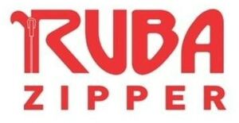

Trade Mark Journal No.2026/001 2 January 2026
WO0000001872792 (6,26)
Office of origin: Turkey
Date of International Registration:30 June 2025
Date of designation in the UK:
30 June 2025

The mark contains the colours red and white.
International priority date claimed: 16 April 2025
(Turkey)
- Class 6
- Ores of non-precious metal; common metals and their alloys and semi-finished products made of these materials; irons for construction; mats and stirrups of common metals for buildings; common metals in the form of plate, billet, stick, profile, sheet and sheeting; containers of metal [storage, transport]; tinplate packings; buildings of metal, frames of metal for building, poles of metal for building, metal boxes, packaging containers of metal, aluminium foil, fences made of metal, guard barriers of metal, metal tubes, storage containers of metal, metal containers for the transportation of goods, ladders of metal; doors, windows, shutters, jalousies and their cases and fittings of metal; non-electric cables and wires of metal; ironmongery; small hardware of metal: screws of metal; nails; bolts of metal; nuts of metal; pegs of metal; flakes of metal; pitons of metal; metal chains; furniture casters of metal; fittings of metal for furniture; wheel clamps [boots]; door handles of metal; window handles of metal; hinges of metal; metal latches; metal locks; metal keys for locks; metal rings for carrying keys; metal pulleys; building panels of metal; door panels of metal; signalling panels, non-luminous and non-mechanical, of metal; signboards of metal, advertisement columns of metal, signaling panels of metal, non-luminous and non-mechanical traffic signs of metal; pipes of metal for transportation of liquids and gas, drilling pipes of metal and their metal fittings, valves of metal, couplings of metal for pipes, elbows of metal for pipes, clips of metal for pipes, connectors of metal for pipes; safes (strong boxes) of metal; metal railway materials, metal rails, metal railway ties, railway switches; bollards of metal, floating docks of metal, mooring buoys of metal, anchors; metal moulds for casting, other than machine parts; works of art made of common metals or their alloys, trophies of common metal; metal closures, bottle caps of metal; metal poles; metal pillars; scaffolding of metal; metal stakes; metal pallets and metal ropes for lifting, loading and transportation purposes; metal hangers, ties, straps, tapes and bands used for load-lifting and load-carrying; wheel chocks made primarily of metal; metal profile laths for vehicles for the purposes of decoration.
- Class 26
- Buttons for clothing, fastenings for clothing, eyelets for clothing, zippers, buckles for shoes and belts, rivet buttons, adhesive tapes [haberdashery], fastenings for clothing, shoe fasteners, zip fasteners, dress body fasteners, pins, other than jewellery, needles, sewing needles, lacing needles, needles for knitting and embroidery, boxes for needles, needle cushions; artificial flowers, artificial fruits; hair pins, hair buckles, hair bands, decorative articles for the hair, not made of precious metal; wigs, hair extensions, electric or non-electric hair curlers, other than hand implements.
RUBA FERMUAR VE PRES DÖKÜM SANAYİ ANONİM ŞİRKETİ
Representative: DESTEK PATENT ANONİM ŞİRKETİ, Odunluk Mahallesi, Akademi Caddesi, Zeno İş Merkezi,, D Blok Kat: 4, Nilüfer, TR-16110 Bursa, TURKEY